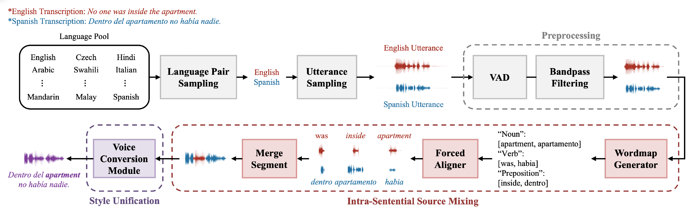

UniCoM: a Universal Code-Switching Speech Generator for Code-Switching Speech Data Augmentation
Anonymous Submission for ACL 2025
Authors
Anonymous Authors
Abstract
Code-switching (CS), the alternation between two or more languages within a single speaker's utterances, is common in real-world conversations. However, multilingual speech technology capable of handling this phenomenon remains underexplored, primarily due to the scarcity of suitable datasets. To resolve this issue, we propose Universal Code Mixer (UniCoM), a novel pipeline for generating high-quality, natural CS samples without altering sentence semantics. Our approach utilizes the Substituting WORDs with Synonyms (SWORDS), which generates CS speech by replacing selected words with their translations while considering their parts of speech. Using UniCoM, we construct Code-Switching-FLEURS (CS-FLEURS), a multilingual corpus designed for automatic speech recognition (ASR) and speech-to-text translation (S2TT). The experimental results show that CS-FLEURS achieves high intelligibility and naturalness, performing comparably to existing datasets on both objective and subjective metrics while emphasizing the strengths of UniCoM. We expect our approach to catalyze advancements in CS speech technology.
Pipeline of UniCoM

Preprocessing: Remove potential artifacts from the input sources to ensure the stability of the pipeline.
Source Mixing: Introduce SWORDS algorithm to generate a intra-sentential CS sample, while preserving unique linguistic features across languages and ensuring speaker identity.
Style Unification: Leverage VC module to standardize speaker styles across different sources.
Samples of CS-FLEURS
More samples are included in "Data" section of ARR submission.
| Sample 1 | Sample 2 | Sample 3 | Sample 4 | Sample 5 | |
| Reference: ASCEND | |||||
| Reference: MUCS2021 | |||||
| CS-FLEURS | |||||
| CS-FLEURS | |||||
| CS-FLEURS |